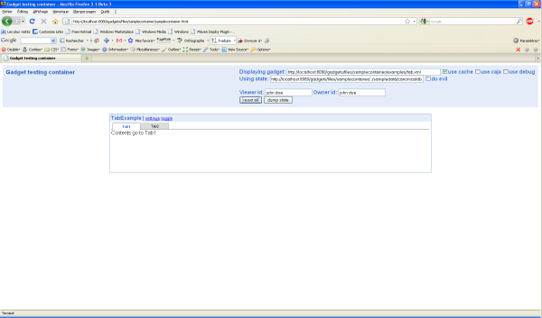

This documentation centre is for developer who wants to use the Apache Shindig's features.
Apache Shindig 1.1.x supports several features.
| Feature | Description |
|---|---|
| analytics/feature.xml | Google Analytics |
| auth-refresh/feature.xml | To refresh the gadget security token |
| caja/feature.xml | Caja support |
| core/feature.xml | Core feature |
| core.io/feature.xml | Core IO feature to provide remote content retrieval facilities. |
| dynamic-height/feature.xml | To augment gadgets.window with functionality to change the height of a gadget dynamically. |
| flash/feature.xml | To embed Flash content into gadgets. |
| locked-domain/feature.xml | Locked domain. |
| minimessage/feature.xml | To create small dismissible messages in gadgets. |
| oauthpopup/feature.xml | To assist with management of the OAuth popup window. |
| opensocial-0.6/feature.xml | Opensocial-0.6. |
| opensocial-0.7/feature.xml | Opensocial-0.7. |
| opensocial-0.8/feature.xml | Opensocial-0.8. |
| opensocial-base/feature.xml | Opensocial base. |
| opensocial-current/feature.xml | Opensocial current. |
| opensocial-data/feature.xml | Opensocial data. |
| opensocial-data-context/feature.xml | Opensocial data-context. |
| opensocial-jsonrpc/feature.xml | Opensocial jsonrpc. |
| opensocial-reference/feature.xml | Opensocial reference. |
| opensocial-rest/feature.xml | Opensocial rest. |
| opensocial-templates/feature.xml | Opensocial templates. |
| osapi/feature.xml | Opensocial API. |
| pubsub/feature.xml | Gadget-side PubSub library for gadget-to-gadget communication. |
| rpc/feature.xml | RPC support. |
| setprefs/feature.xml | To augment gadgets.Prefs with functionality to store prefs dynamically. |
| settitle/feature.xml | To augment gadets.window with functionality to set the title of a gadget dynamically. |
| skins/feature.xml | Provide operations for getting display information about the currently shown skin. |
| tabs/feature.xml | Tab suuport. |
| views/feature.xml | Gadgets.views API spec |
| xmlutil/feature.xml | Provide xml utilities. |
To use an above feature in your gadget, you need to specify the feature as <require/> in <ModulePrefs/> and defining some Javascript codes to use it. Refer to the JavascriptDoc for 1.1.x to write your own Javascript.
For example, if you plan to use the tabs/feature.xml, your gadget will look like the following:
<Module>
<ModulePrefs title="TabExample" description="Tabs Example">
<Require feature="tabs"></Require>
</ModulePrefs>
<Content type="html">
<![CDATA[
<script type="text/javascript">
function onLoad(){
var tabset=new gadgets.TabSet();
tabset.alignTabs('left');
tabset.addTab("Tab1",{contentContainer:document.getElementById("tab1")});
tabset.addTab("Tab2",{contentContainer:document.getElementById("tab2")});
}
gadgets.util.registerOnLoadHandler(onLoad);
</script>
<div id="tab1">
Contents go to Tab1
</div>
<div id="tab2">
Contents go to Tab2
</div>
]]>
</Content>
</Module>
You could test your code using the Gadget testing container at: http://localhost:8080/gadgets/files/samplecontainer/samplecontainer.html
TODO, see How to Contribute page